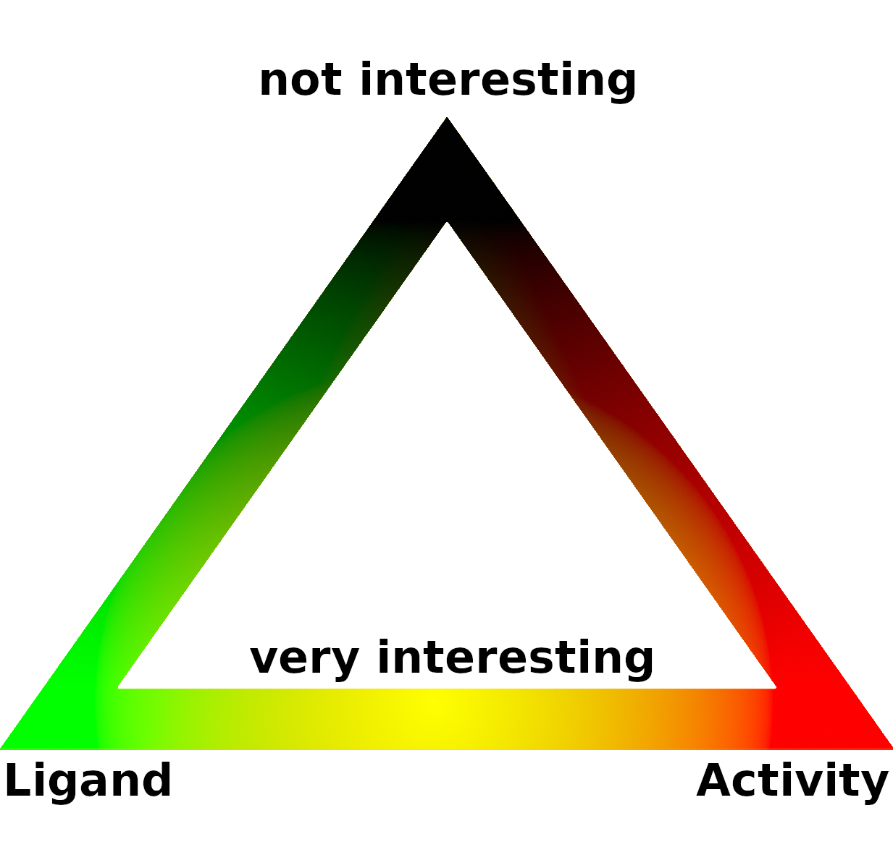

Protein Activity Prediction Visualization
Input JSON with coordinates and activities
Show example protein
Interactive Molecule Activity View

Enable and disable distance and activity visualization:
Activity
Distance
The Pearson correlation coefficient is: 0.00